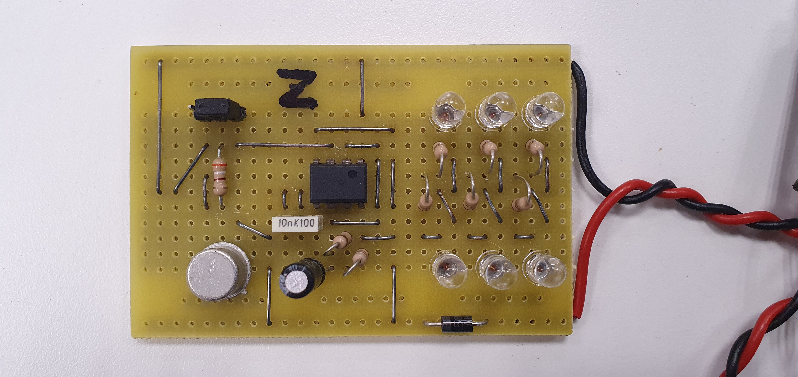

M1: J'applique une opération de maintenance (préventive, corrective, améliorative) à un système
BLC: Brassard Lumineux pour Cycliste
Nous avons travaillé sur une carte électronique de Brassard Lumineux pour Cycliste. Ce système permet de signaler la présence d’un usager grâce à des LEDs fonctionnant selon deux modes : un mode continu et un mode clignotant.
Pendant les essais, j’ai constaté que le comportement lumineux n’était pas conforme à celui attendu : les LEDs clignotaient bien, mais avec une luminosité plus faible que sur la carte de référence. Le problème était donc lié à une non-conformité sur la partie éclairage.
Après analyse, j’ai identifié que les résistances montées sur la carte ne correspondaient pas à celles indiquées dans le schéma électrique. Cette différence expliquait l’intensité lumineuse trop faible observée sur le prototype.
La solution de maintenance consiste donc à remplacer les résistances par les valeurs correctes prévues dans le dossier de conception afin de retrouver l’intensité lumineuse attendue et remettre la carte en conformité.

MUGOCHAUD
J'ai travaillé sur la maintenance du système MUGOCHAUD. Mon rôle consistait à diagnostiquer une panne liée à l’indication d’alimentation du coffret.
Lors de la mise sous tension, la LED rouge censée signaler l’état d’alimentation ne changeait pas correctement d’état. Le système restait en permanence alimenté à 24 V, ce qui empêchait la mise en sécurité du chauffage et le fonctionnement normal du cycle.
Pour résoudre ce problème, j’ai suivi la procédure de maintenance demandée : retrait du contacteur depuis la porte du coffret, remplacement par un composant neuf, puis reprise complète de la procédure d’essais afin de vérifier le bon fonctionnement du boîtier et de son automatisme.

M2: Je rédige la procédure de maintenance (préventive, corrective, améliorative) d'un système
BLC: Brassard Lumineux pour Cycliste
Pour documenter la maintenance du BLC, j’ai rédigé une procédure permettant de localiser la panne, d’identifier la cause racine et de définir la correction à appliquer.
La démarche suivie repose sur les étapes d’une maintenance corrective :
- Contrôle visuel de la carte et des soudures
- Vérification du fonctionnement des LEDs en mode continu
- Comparaison avec le schéma électrique
- Identification des résistances réellement montées
MUGOCHAUD
J’ai rédigé la procédure de maintenance du boîtier métallique du système MUGOCHAUD, en détaillant toutes les étapes fait pendant maintenance.
La procédure comprend les opérations suivantes :
- Mettre le système hors tension
- Retirer le contacteur du boîtier métallique
- Installer un nouveau contacteur conforme
- Vérifier la LED d’état alimentation / non-alimentation,
- Relancer la procédure complète du maintenance du système
- Confirmer la bonne mise en sécurité du chauffage et le retour au fonctionnement normal